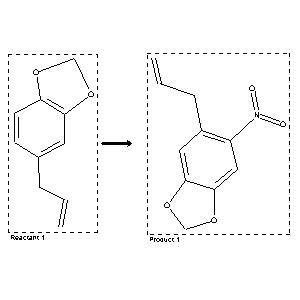

|  |
| FA | RX(1); FLST(1); RX(3) |
Reaction (1 of 1)
| Reaction ID | 132188 |
| Reactant BRN | 136380 |
| Reactant | 5-allyl-benzo[1,3]dioxole |
| Product BRN | 199286 |
| Product | 5-allyl-6-nitro-benzo[1,3]dioxole |
| No. of Reaction Details | 3 |
Reaction Details (1 of 1)
| Reaction Classification | Preparation |
| Yield | 70 percent (BRN=199286) |
| Reagent | conc. nitric acid |
| Solvent | acetic acid |
| Time | 2 hour(s) |
| Citation Pointer | 6315729; Journal; Silva, Kezia Peixoto da; Souza, Ivone A. de; Faria, Antonio Rodolfo de; Brondani, Dalci Jose; Leite, Ana Cristina Lima; HCOMEX; Heterocycl.Commun.; EN; 7; 5; 2001; 445 - 448; |
Reaction Details (2 of 1)
| Reaction Classification | Preparation |
| Reagent | glacial acetic acid; nitric acid |
| Citation Pointer | 500305; Journal; Foulds; Robinson; JCSOA9; J.Chem.Soc.; 105; 1914; 1966; |
Reaction Details (3 of 1)
| Reaction Classification | Preparation |
| Other Conditions | durch Nitrieren |
| Citation Pointer | 506412; Patent; Merck,E.; DE 478844; FTFVA6; Fortschr.Teerfarbenfabr.Verw.Industriezweige; DE; GE; 16; 2907; |
Reference (1 of 3)
| Citation Number | 500305 |
| Document Type | Journal |
| Authors | Foulds; Robinson |
| CODEN | JCSOA9 |
| Journal Title | J.Chem.Soc. |
| (Series) Volume | 105 |
| Publication Year | 1914 |
| Page | 1966 |
Reference (2 of 3)
| Citation Number | 506412 |
| Document Type | Patent |
| Patent Author | Merck,E. |
| Patent Number | DE 478844 |
| CODEN | FTFVA6 |
| Journal Title | Fortschr.Teerfarbenfabr.Verw.Industriezweige |
| Country Code | DE |
| Language Code | GE |
| (Series) Volume | 16 |
| Page | 2907 |
Reference (3 of 3)
| Citation Number | 6315729 |
| Document Type | Journal |
| Authors | Silva, Kezia Peixoto da; Souza, Ivone A. de; Faria, Antonio Rodolfo de; Brondani, Dalci Jose; Leite, Ana Cristina Lima |
| CODEN | HCOMEX |
| Journal Title | Heterocycl.Commun. |
| Language Code | EN |
| (Series) Volume | 7 |
| Number | 5 |
| Publication Year | 2001 |
| Page | 445 - 448 |